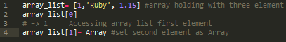
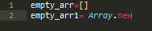
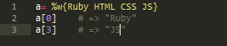
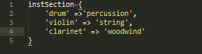
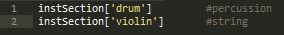
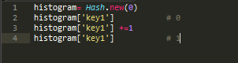

Technical Blog On Arrays and Hashes
Created By Sagar Rathi
Date: 10/26/2014
Arrays & Hashes are almost similar concepts in programing
Ruby's arrays and hashes are indexed collections. Both store collections of objects, accessible using a key. With arrays, the key is ainteger, and Hashes support any obiect as a key. Both arrays and hashes grow as required to hold new element. Array elements are more efficient to access but Hashes provides flexibility. Array or Hashes can hold objects of different types; So one can have array or hashes containing an integer, float number and string.
One can create and initialize a new array using an array literal -- A set of elements between square brackets. Given an array object, one ca access individual elements by supplying an index between square brackets.
You can create empty arrays by using an array literal with no elements or using the array object's constructor, Array.new
Sometimes creating array of words can be pain, with all the quotes and commas. So here is shortcut : %w does just put commas and quotes.
Ruby Hashes are similar to array. A hash literal uses braces rather than square brackets. The literal must supply two objects for every entry that is key-value pair.
Example you might want to map musical instruments to their orchestral sections.
Hashes are indexed using the same square bracket notation as arrays to access elements
As the last example shows, a hash by default returns nil when indexed by a key it doesn't contain. Normally this is convenient, as nil means false when used in conditional expressions. Sometimes you'll want to change this default. For example, if you're using a hash to count the number of times each key occurs, it's convenient to have the default value be zero. This is easily done by specifying a default value when you create a new, empty hash.
